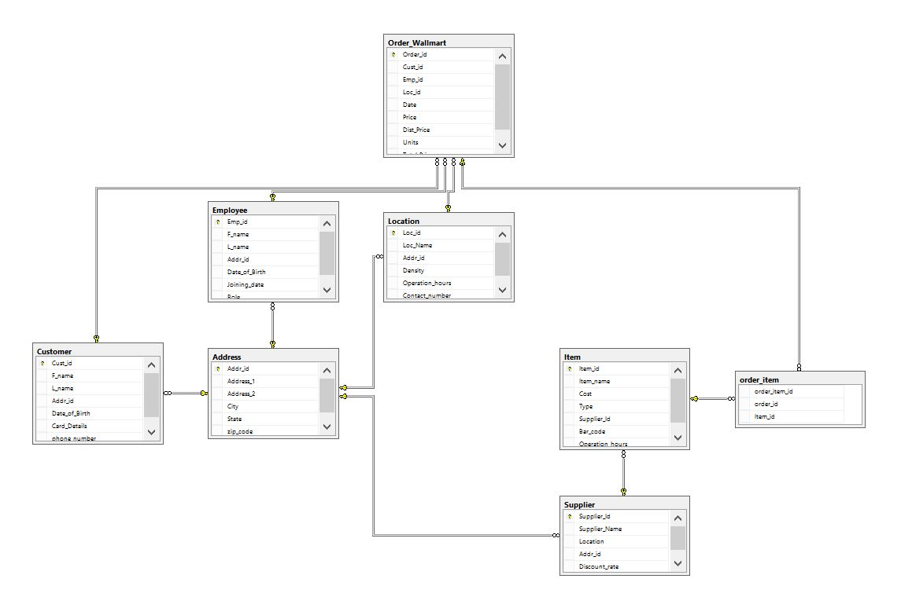

Relational Database Design
with SQL Server 2012
Jan. 2015 - May 2015This project is to develop a database system and its interface for chained retail stores like Walmart, based for real world business needs.
The main tasks are as follows:
*Draw the blueprint using Visual Studio 2013, developing ERD and Relational Model
*Designed a Database system for chained retail stores using SQL Server 2012
*Created an interface that give different roles different admin rights
*Documented a report on database design and problem sloving
Database Structure Design
The Entity Relationship Diagram used for the project:
Group members: Hua Bai, Huiyao Dong, Meng Zhang, Rohan Ashok Patil